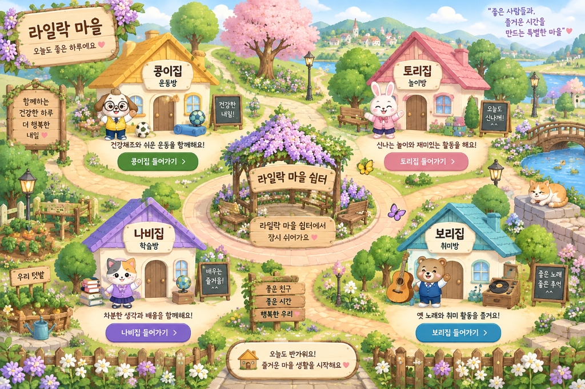

콩이네 운동집
의자에 앉아 시원하게 몸을 풀고 건강 체조를 해요.
콩이네 놀러가기 ▶
의자에 앉아 시원하게 몸을 풀고 건강 체조를 해요.
재미있는 짝 맞추기, 알록달록 퍼즐과 추억 놀이를 해요.
오늘 날짜와 계절, 정다운 옛 속담과 낱말을 배워요.
정겨운 옛 노래를 따라 부르고 예쁜 꽃을 색칠해요.
약속된 시간에 맞춰 함께할 즐거운 프로그램입니다.
의자에 편안히 앉아 목과 팔, 다리를 부드럽게 움직여요.
남대문 시장 옛 사진을 보며 따뜻한 이야기를 나눠요.
'고향의 봄'과 추억의 명곡을 들으며 손뼉을 쳐요.
따뜻한 햇살 아래 정원 마을을 천천히 둘러보세요.

시원하고 맑은 물소리를 들으며 숨을 깊게 들이쉬고 내쉬어요.
알록달록 활짝 핀 국화꽃과 라일락 꽃향기를 천천히 맡아보세요.
시원한 그늘 아래 도란도란 옛이야기를 나누며 쉬어가는 곳이에요.
방울토마토와 상추가 쑥쑥 자라나는 친구들의 정성 어린 텃밭입니다.
김순자 어르신께서 이번 주에 참여하신 소중한 기록이에요.
친구들과 함께 건강하고 즐거운 하루를 보내고 계십니다.
어르신의 참여와 활동을 안전하고 쉽게 관리합니다.
선생님께서 원하시는 프로그램을 선택하여 대형 화면 또는 태블릿에서 바로 수업을 시작하실 수 있습니다.